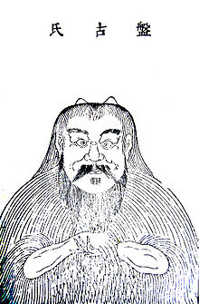
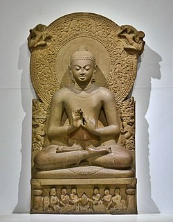

La mitología china es el conjunto de relatos fantásticos cohesionados de la cultura de la antigua China. Muchas de sus leyendas toman lugar durante el período de los tres augustos y cinco emperadores. Mucho de la mitología China es única, aunque comparte bastante con Japón y Corea, debido a su influencia en la antigüedad.
La Mitología China se conoce gracias a textos que datan esencialmente de la dinastía Han. Al no tener más de 2000 años de antigüedad, estos escritos apenas pueden clasificarse como recientes. A veces reinterpretaron la mitología de acuerdo con sus concepciones filosóficas. De este modo, transformaron a los más importantes dioses en soberanos virtuosos que reinaban en tiempos antiguos. También asociaron a sus dioses con las cinco direcciones (es decir, los cuatro puntos cardinales y el centro) según una cosmología elaborada durante la Antigüedad temprana.
| DEIDADES | SERES | LUGARES |
|---|---|---|
| Bi Gan | Jiang Shi | Yao Chi |
| Cai Shen | Chao | Di Yu |
| Lung Mo | Dilong | Xuan Pu |
| Qi Yu | Shenlong | Que Qiao |
| Zao Shen | Yinglong | Peng Iai |
| Shen Nong | Li | Long Men |
| Pan Gu | Zhù | Fu Sang |
| Nu Ba | Jian | |
| Peng |
Pan Gu es un ser mitológico chino. Forma parte de dos mitos cosmogónicos; con su nacimiento se formó el mundo y de sus órganos, tras su muerte, surgieron los accidentes geográficos. Es venerado en el taoísmo.
Se suele representar a Pan Gu con un par de cuernos, un cuerpo peludo y ropa hecha con plantas. A veces tiene colmillos y a veces lleva un hacha. A veces parte de su cuerpo es el de una serpiente o un dragón.
En el principio no había nada en el universo salvo caos informe y una masa oscura y vacía. El caos comenzó a fusionarse en un huevo cósmico durante 18.000 años. Dentro de él, los principios opuestos del yin y yang se equilibraron y Pangu salió del huevo. permaneció entre ellos empujando el cielo hacia arriba. Esta tarea le llevó 18.000 años, elevándose el cielo cada día 3,33 metros.
Después de otros 18.000 años, Pan Gu se tumbó a descansar. Era ya tan mayor que su sueño fue llevándolo lentamente hacia la muerte.
Según la leyenda, Pangu acabó de crear el universo hacia el año 2.229.000 A.C. Así, Pan Gu dio origen a todo lo que conocemos hoy en día.
No existen muchas referencias artísticas de la Antigua China, pero sí religiosas como el Buda, o literarias.
La escultura en piedra y la arquitectura en madera fueron los cauces a través de los cuales la sociedad se manifestó como colectividad profundamente jerarquizada.
La escultura en piedra se inició como majestuosa y representativa decoración de los caminos funerarios de las tumbas imperiales en la Dinastía Han. Grandes animales reales y mitológicos, representación de los estamentos sociales —letrados, militares, extranjeros, etc.— fueron los temas elegidos para dignificar el poder.
El budismo es reconocido de manera general como una de las grandes religiones del planeta, y afirma una vía de liberación con la que intenta dar una solución espiritual al sufrimiento humano. No obstante, el budismo no es una religión teísta. En Occidente se suele asociar la "religión" con la necesidad en la creencia en una divinidad, y por patrones culturales de este tipo, muy influenciados por las religiones abrahámicas, muchas personas tienden a ver al budismo como una filosofía.
Pero a pesar de que el budismo no postule sobre un dios como última explicación de la realidad en el que creer, y de que realice indagaciones muy elaboradas sobre las características y la naturaleza fundamental del ser humano y de la realidad; el budismo no puede ser considerado solamente una filosofía ya que no es sólo un mero cultivo intelectual sino ante todo espiritual. Así, aunque el Buda rechazó el dogmatismo y la fe ciega, también distanció sus enseñanzas del trabajo de los filósofos al subrayar el valor de la propia experiencia personal directa de estas.
Sin embargo este debate sobre la naturaleza del budismo sea posiblemente un fenómeno mayoritariamente occidental, y para algunos eruditos budistas orientales, como Walpola Rahula, cualquier tipo de "etiquetado" que le pongamos al budismo carece de importancia real alguna. A partir de finales del siglo XIX el budismo se ha ido conociendo mejor en Occidente, donde desde entonces ha influenciado paulatinamente el pensamiento, el arte y la psicología humanista y existencial.
